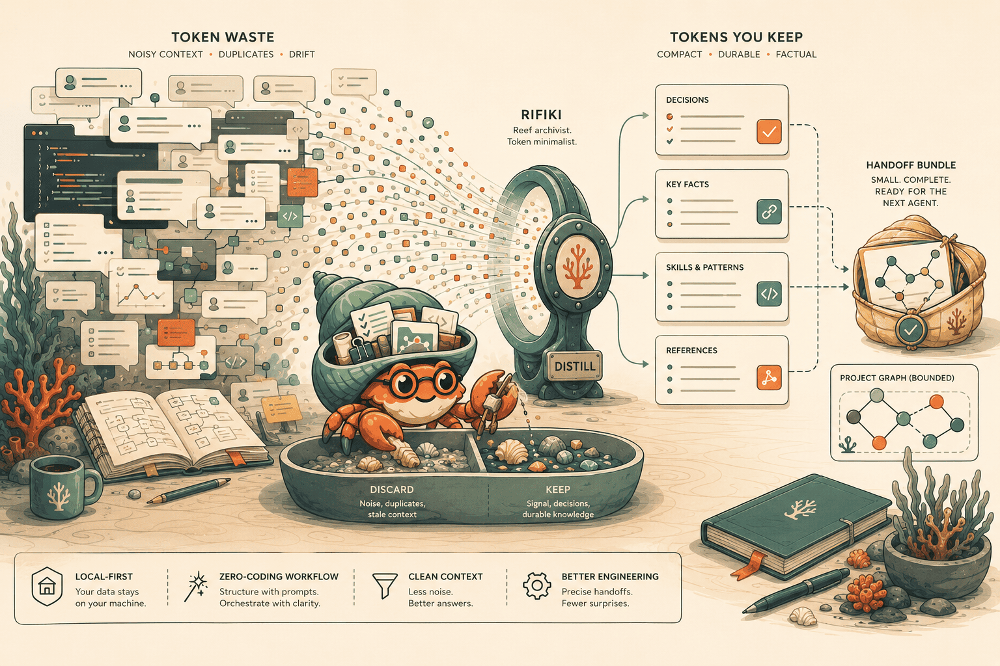
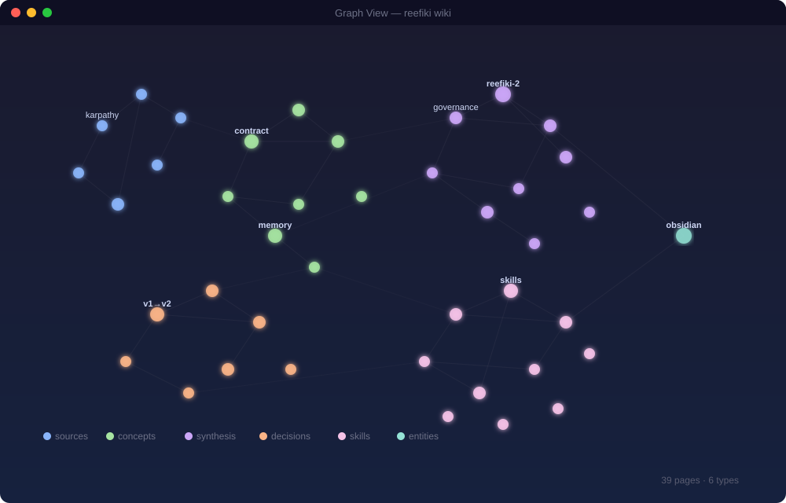

Markdown memory for agent work
REEFIKI
Local-first distillation wiki for AI agents.
Turns chat noise into reusable decisions, skills, and project memory.
Apache 2.0
Markdown files
Git history
Agent-agnostic
Chat noise
Rifiki keeps only the useful trail
The failure mode
AI agents forget between threads.
Decisions stay in chats. Nobody knows why the project turned left.
Useful procedures vanish. A fix becomes a story instead of a reusable skill.
The next agent starts cold. Context gets reread, guessed, or lost.
How it works
Capture -> Filter -> Save -> Link -> Recall.
REEFIKI is not a chat archive. It is a distillation loop that lets an agent leave a precise trail for the next agent.
-
01
Capture
Sources, notes and session conclusions enter a project inbox.
-
02
Filter
The agent keeps material only when it can be reused later.
-
03
Save
Useful knowledge becomes markdown decisions, skills or synthesis.
-
04
Link
Index, log and references keep the memory navigable.
-
05
Recall
The next agent reads bounded context instead of the whole chat history.
Token economy
Less context rereading. More reusable memory.
These are rough ranges, not benchmarks or guarantees. The gain comes from reading selected markdown memory instead of dragging every prior thread forward.
50-90%
fewer repeat context reads
70-95%
for one decision or skill
60-90%
for a bounded handoff
0-20%
first pass overhead

Memory types
Compact markdown cards, not a giant transcript.
Decisions
What changed, why it changed, and what future agents should respect.
Skills
Repeatable procedures that turn one solved problem into an agent habit.
Concepts
Reusable understanding of the project, domain, constraints and vocabulary.
Synthesis
Session and stage takeaways distilled into a compact handoff trail.
Sources
Where an idea came from, with enough provenance to check it later.
Agent-agnostic
One project memory, many agents.
REEFIKI rules live in markdown contracts, so Codex, Claude Code, Cursor, Windsurf, Cline and other LLM agents can follow the same local trail.
- Codex
- Claude Code
- Cursor
- Windsurf
- Cline
- Other LLM agents

Local-first safety
Markdown files, git history, private boundaries.
No cloud memory is required. Private wiki projects stay local unless a guarded publish flow explicitly says they are safe to expose.
projects/<name>/wiki/
decisions/
skills/
concepts/
synthesis/
git history = memory audit trail
public snapshot = guarded output
cloud account = optional, not requiredPositioning
Not another wiki. Not another cloud memory.
Instead of
REEFIKI gives you
Saving every chat
A filter for reusable project knowledge
Cloud memory lock-in
Local markdown and git history
Agent-specific rules
Portable contracts for different coding agents